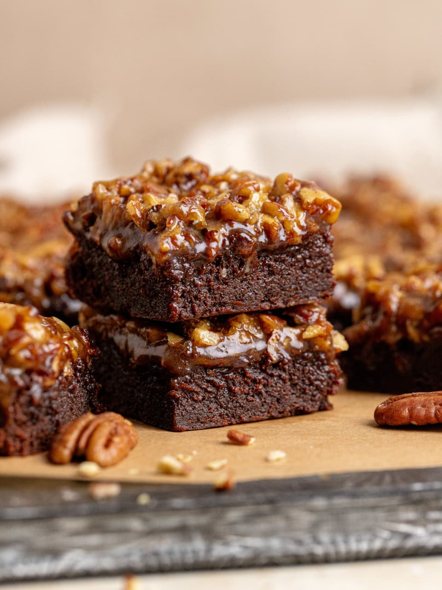

Chocolate Brownie
⭐⭐⭐⭐⭐ 4.9 Rating | ⏱ 45 Minutes | 🍽 8 Pieces
Category
Dessert
Difficulty
Easy
Calories
320 kcal
Cooking Style
Baked
📋 Ingredients
- 1 cup of sugar (200 g)
- 1/2 cup of canola oil or vegetable oil (120 mL)
- 2 large eggs
- 1 tsp of vanilla extract (5 mL)
- 1/2 cup of flour (60 g)
- 1/4 tsp of salt (1.5 g)
- 1/4 tsp of baking powder (1.5 g)
- 1/3 cup of cocoa powder (35 to 40 g)
- 6 oz of half a bag of chocolate chips (use your favorite) (168 g)
- 11x7 or 9x9 greased pan (cooking spray, etc)
🍳 Required Utensils
- Mixing Bowl
- Whisk
- Measuring Cups
- Baking Tray
- Oven
- Cooling Rack
- Knife
📖 Introduction
Chocolate Brownie is a rich, soft, and fudgy dessert loved by people of all ages. It has a delicious chocolate flavor and is perfect for birthdays, parties, or evening snacks with ice cream.
🔬 Principle
Brownies are prepared by mixing wet and dry ingredients separately and baking them at the correct temperature. Proper baking gives a crispy top with a soft, moist center.
👨🍳 Procedure
- Preheat the Oven: Start by preheating your oven to 350°F (175°C). This is crucial for even baking.
- Prepare the Baking Pan: Grease a 9x13-inch baking pan with butter or line it with parchment paper. This helps prevent sticking.
- Melt the Butter: In a medium saucepan, melt the unsalted butter over low heat. Allow it to cool slightly before mixing in sugar.
- Mix the Wet Ingredients: In a large bowl, combine the melted butter and granulated sugar. Whisk together until smooth. Add eggs, one at a time, mixing well after each addition. Stir in the vanilla extract.
- Combine Dry Ingredients: In a separate bowl, sift together the flour, cocoa powder, and salt. This ensures that the dry ingredients are evenly distributed.
- Incorporate Dry into Wet: Gradually fold the dry mixture into the wet mixture. Do not overmix; stop when just combined. If desired, fold in chocolate chips.
- Transfer to Baking Pan: Pour the brownie batter into the prepared pan, spreading evenly.
- Bake: Place the pan in the preheated oven and bake for 20-25 minutes. A toothpick inserted in the center should come out with a few moist crumbs.
- Cool: Allow the brownies to cool in the pan for about 10 minutes before transferring to a wire rack to cool completely.
- Cut into square pieces.
- Serve and enjoy.
⚠ Precautions
- Do not overmix the batter.
- Preheat the oven before baking.
- Avoid overbaking.
- Cool completely before cutting.
- Store in an airtight container.
💡 Chef Tips
- Add extra chocolate chips for a richer taste.
- Serve warm with vanilla ice cream.
- Dust with powdered sugar.
- Add almonds or cashews for crunch.
🥗 Nutrition Facts
| Nutrient | Amount |
|---|---|
| Calories | 320 kcal |
| Protein | 5 g |
| Carbohydrates | 42 g |
| Fat | 15 g |
🍽 Serving Suggestions
- Vanilla Ice Cream
- Chocolate Syrup
- Fresh Strawberries
- Whipped Cream
- Hot Coffee
🌿 Health Benefits
- Dark cocoa contains antioxidants.
- Provides quick energy.
- Chocolate can improve mood.
- Walnuts provide healthy fats.
- Best enjoyed in moderation.
✅ Result
The prepared Chocolate Brownie should have a shiny, slightly crisp top with a soft, fudgy center and a rich chocolate flavor. It tastes best when served warm with vanilla ice cream or chocolate sauce.
🎥 Watch Recipe Video
Learn the complete recipe by watching the step-by-step video.
▶ Watch on YouTube